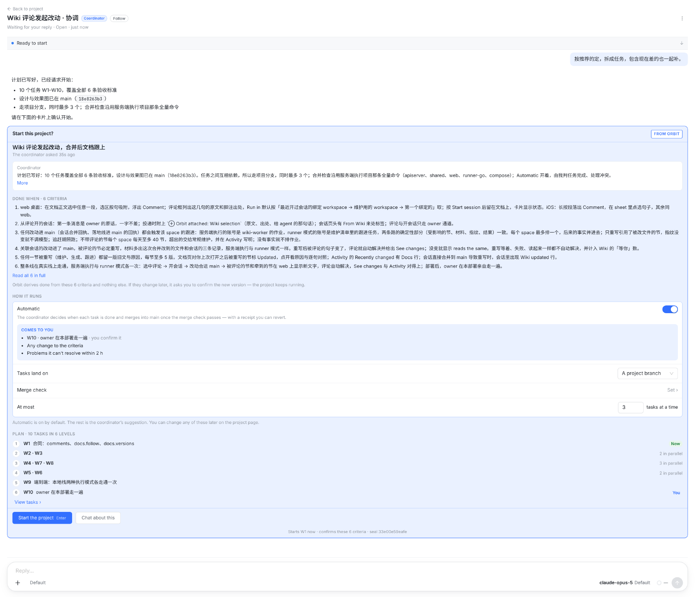
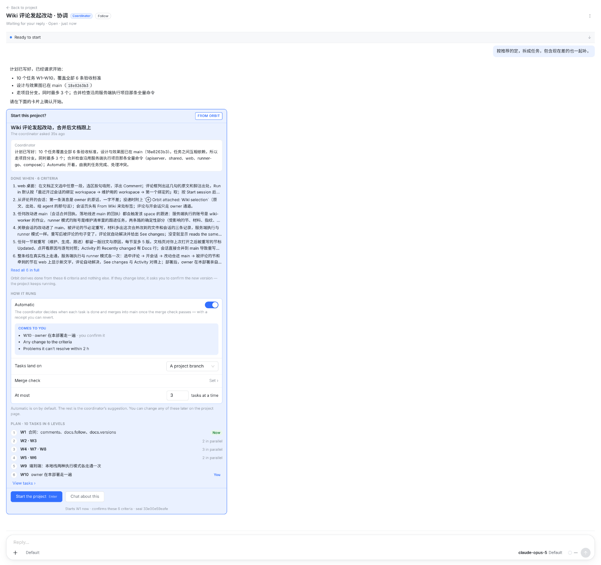
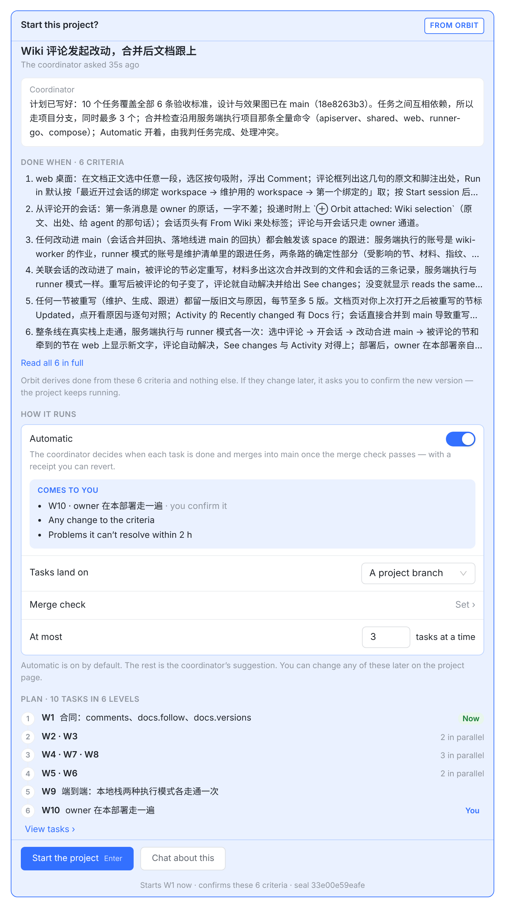
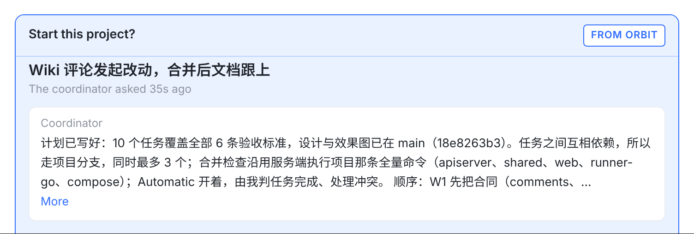
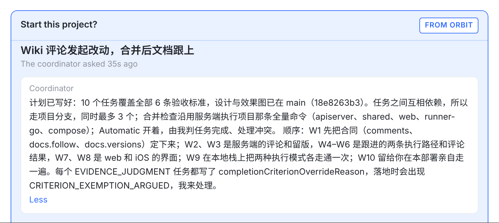
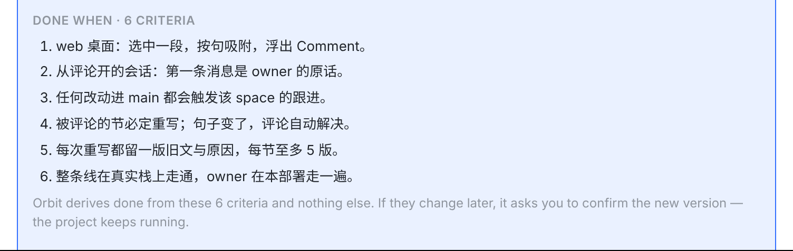
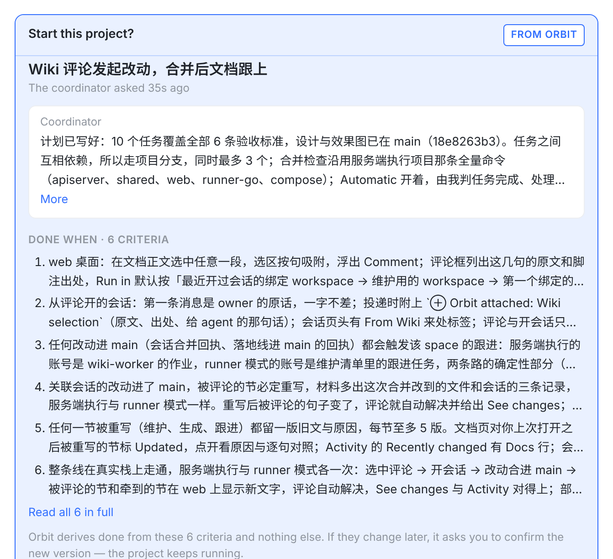
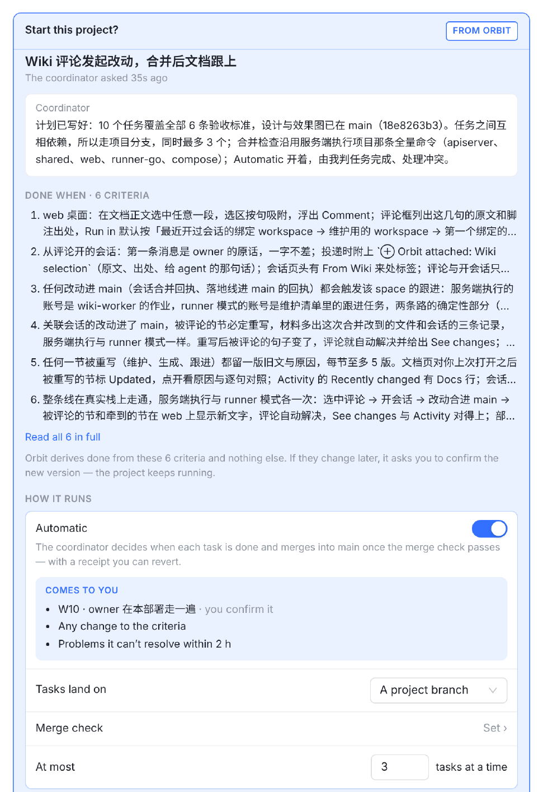
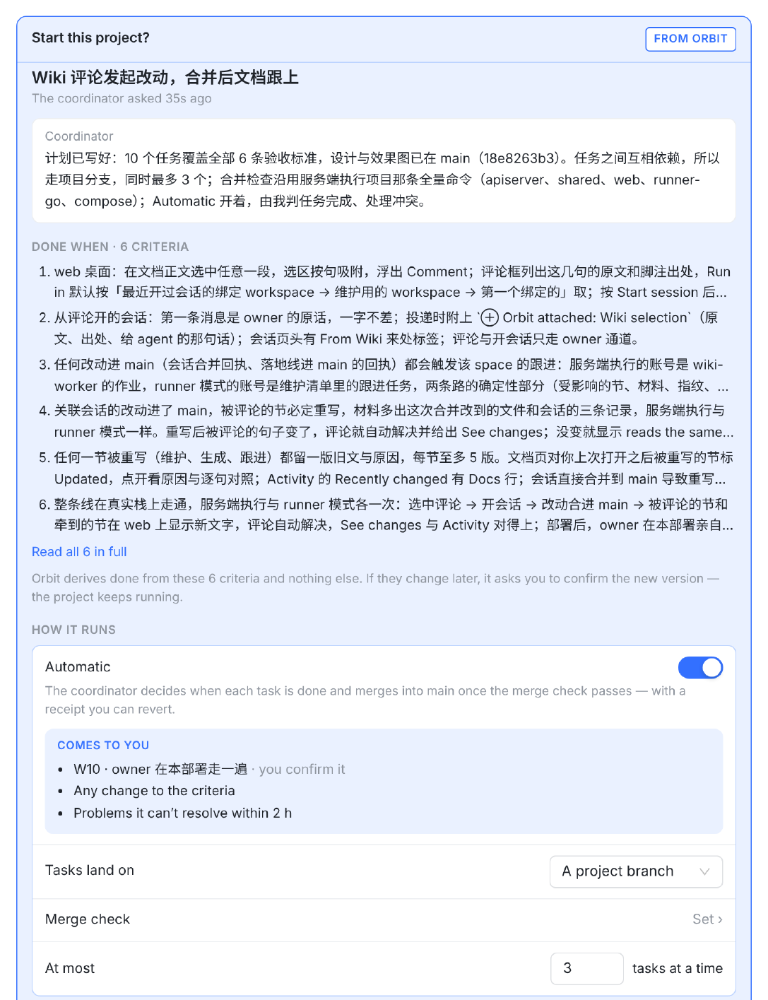
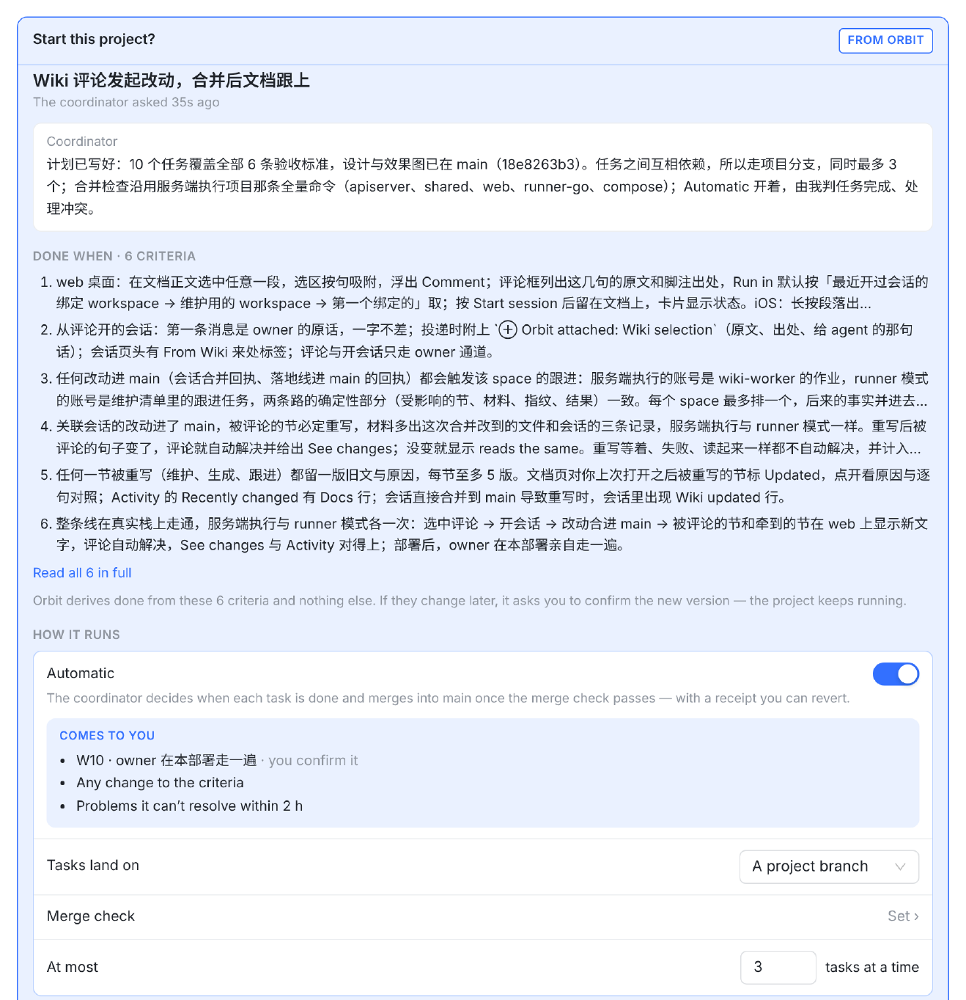

你截图里的 Start 卡，内容、顺序和数据都对（我按项目 34cbCXaNMJIHWoigS7XWd 的 6 条标准、10 个任务和 15 条依赖逐项核过），只有两处不对：宽窗口下整张卡铺满对话；协调者原话和标准都已显示全时，More 和 Read all 6 in full 还在，点了只是换个字。
下面每张图都是真实会话页的截图（vite + 仓库里 ui-migration 的 fixture，项目数据照抄这个项目），不是画的：「现在」是 main 3ced69192，「改后」是同一份代码改了 StartProjectCard.tsx 和 index.css 跑出来的（这两个文件在最新 main 5e17800a0 上没有变化）。虚线和标签是标注。只动这一张卡：输入框、别的消息、手机网页、项目页的 Start 对话框都不变，卡里的文案一个字不改。

名字和开关相距约 1,760 px原话只有 1 行6 条都已显示全开关、下拉框和数值都在最右边，离左边的名字约 1,760 px；每条标准一行一百多个字。原话只有一行，下面还是有 More；6 条标准都已显示全，下面还是有 Read all 6 in full。这两个点了都只是换个字。

最宽 720 px正好 3 行：没有 More5 条被截断：有 Read all卡片和上面那条回复左对齐，右边空着；输入框和别的消息不动。原话在 720 下正好 3 行，所以没有 More；5 条标准被截成两行，所以有 Read all 6 in full。

开关、下拉框、数值离名字约 556 px（现在约 1,760 px）。标准每条最多两行，和 iOS 的卡一样；其余和现在完全相同。

超过 3 行才有 More用一段 7 行的原话试：截成 3 行，下面有 More。

展开后是 Less显示全文，链接变成 Less。窗口宽度再怎么变，展开的都不会自己收起。

换成一组短标准（每条一行）。现在这里也会有一个 Read all 6 in full，点了没变化。

对话区约 640 px，没到 720，卡片照旧跟对话一样宽。这里原话 4 行截成 3 行，有 More；6 条标准都被截断，有 Read all。改后和现在的截图逐字节相同。

6 条标准被截断；名字和开关相距约 476 px。

5 条被截断；原话正好 3 行；相距约 556 px。

3 条被截断，折行少一些；开关离名字更远，约 716 px。
| 情况 | 现在 | 改后 |
|---|---|---|
| 对话区宽于 720 px（左栏和会话列表都开着时，窗口宽于约 1,360 px） | 卡片和对话一样宽 | 最宽 720 px，靠左（① → ②） |
| 对话区不到 720 px | 和对话一样宽 | 不变（⑤） |
| 手机网页（预览行 + 审阅弹窗），项目页的 Start 对话框（640 px） | — | 不变：本来就不到 720 |
| 协调者原话在 3 行以内 | 有 More，点了只变成 Less | 没有 More（②） |
| 原话超过 3 行 | 3 行 + More；点开是全文 + Less | 不变（③） |
| 每条标准都在两行内显示全 | 有 Read all N in full，点了没变化 | 没有（④） |
| 至少一条标准被截断 | Read all N in full | 不变（②） |
| 拖动窗口改变宽度 | — | 重新量：被截掉就出现，不再截掉就消失；已展开的不会收起 |
| 文案、按钮、Enter 快捷键、按下 Start 做什么 | — | 不变 |
src/web/src/index.css（Start 卡那一节，约 L10464）：加一条 .start-card { max-width: 720px; }。src/web/src/components/StartProjectCard.tsx：加一个小 hook，排版后比较 scrollHeight 和 clientHeight，宽度变了（ResizeObserver）再量一次；More 和 Read all 只在有字被截掉、或已经展开时才画。约增 45 行、删 14 行。StartProjectCard.test.tsx。jsdom 不排版，测试里给元素指定高度，测「截掉才出现」「没截掉不出现」「展开后不消失」。版面用真浏览器截图核对，本板就是那份代码跑出来的。lib/projectStart.ts）、OrbitKit 的文案对照测试、服务端。ApprovalCards.swift），原话短时点了同样没变化：一起改成同一条规则 ／ 这次只改 Web。SwiftUI 只在 CI 上编译，要走 probe 分支看截图。